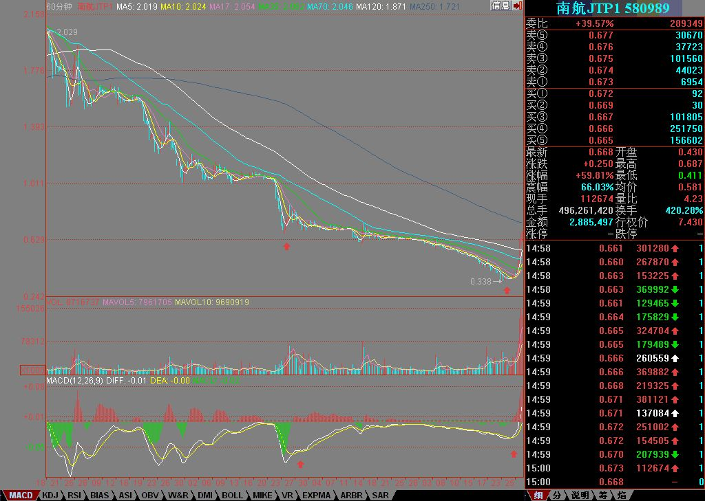

580989完美地达到理论要求的第一目标。
2008/1/28 15:20:28
周五说580989，并不是让一般人买，这点说得很清楚，今天继续说580989，主要是两点，这两点都值得所有想学点东西的人学习：1、上周五启动580989，正在于一个消息面上的不稳定性，因此有了一个大面积对冲风险的选择。2、这个启动，完美地体现本ID理论，后面再详细分析。
强烈注意，580989几个月后连纸都不如，特别在上涨这么多以后，任何人都不能再参加了，除非你是在底分型时买入的而且有极高的震荡技术。这东西最后的命运是0，千万注意。
先回到大盘，周末，都是不招人待见的消息，最严重的，就是中石油准备有10亿上来这条，不过这正好完成了本ID说的那个故事所说的目标，当然，那个目标只是一个大概数，就是让最早买的有腰斩的快感，如此而已。等那10亿出来，其活力会有所增加，但只要没有期货，还是折腾的命，暂时没有大戏，而且也不能有大戏，否则我们可爱的题材股怎么办？
大盘今天开盘就选择“ 一、如果在4818点上下就结束，那么就是最弱的，后面就不亮晶晶了，改10X10米晶晶亮了。”一个线段就下来了400点，然后是一个线段的反弹，这反弹只要不能重新回来原来震荡区间，就有逐步扩展成5分钟第三类卖点的风险。
关于目前的情况，前面已经很明确地说过，最坏的情况就是在4778点下形成5分钟下跌的第一个中枢，一旦这种情况出现，后面的下跌可能更加惨烈。
那么，我们可以讨论什么情况才可能出现这种情况，大概唯一的可能就是美国出现1987年那样的崩盘，说实话，本ID特愿意见到这一点，如果在短期里出现这样，估计580989会被爆拉到N元，更重要的，看到美国鬼子不爽本ID总是比较爽的，所以本ID并不介意这种情况的出现。但99.999%都不会出现如此情况，今晚，美国是否继续减息，这点很重要。
一般情况下是不会出现这种最坏走势的，毕竟年线在那里，在关于今年的展望里，本ID已经明确说过，今年至少见两次年线，第一次应该是喜剧。
那么次坏的情况，就是这5分钟中枢是盘整类型中的，最终扩展成30分钟的。这种情况，不过依然是震荡局面，没什么大不了的。
最好的情况，就是这5分钟又震回去，最后还震出第三类买点来，但你的思维里千万不能被这种最好的走势完全占据，这样会蒙住你自己的眼睛。
个股方面，今天还有不止一只股票顽强地走出新高，一旦大盘走稳，该爆发的都要爆发，仔细看好借机洗盘的，题材股继续火暴。
下面，请好好分析一下580989的图，里面的标准性一目了然，60分钟上从2.3下来的底背驰，然后今天回拉到第一个红箭头指出的中枢中，完全符合本ID的理论最低回拉幅度的走势。后面很简单，首先是围绕该中枢的震荡，如果有机会，例如美国1987年，那么就一飞冲天，如果到4、5月美国还不1987，那么就清0，如此简单。
注意，这是学习材料，一般人绝对不能介入，否则一切后果自己负责。
